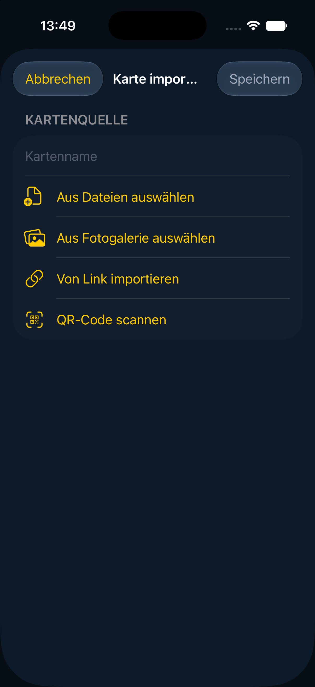

iPhone und iPad
- Speichere die PDF in der App „Dateien“.
- Öffne den Kartenimport in MapNero und wähle „Aus Dateien auswählen“.
- Wähle deine PDF und prüfe anschließend die importierte Karte.
MAPNERO FELDANLEITUNGEN
Importiere deine Karte, prüfe ihre Lage und öffne sie vor dem Außeneinsatz erneut ohne Internetverbindung.
Kostenlos herunterladen. Mit Free kannst du beliebig viele eigene Karten importieren. Unterstützte Dateien, weitere Funktionen und Grenzen hängen von Plattform und Tarif ab.
Kostenlose GeoPDF-Übungskarte ausprobieren ↓
Eine gedruckte Koordinate auf einer PDF ist nicht dasselbe wie gespeicherte Georeferenzierung. Prüfe nach dem Import mehrere bekannte Stellen. Das bloße Öffnen einer Datei bestätigt noch nicht, dass die Karte richtig liegt.
Bewahre die Originaldatei auf. Prüfe Datum, Abdeckung und Eignung deiner Karte für den geplanten Einsatz.
Practice Island ist eine fiktive Insel nahe 0° N und 0° E. Der einseitige GeoPDF mit 52 kB enthält drei gedruckte Referenzpunkte. Er dient zum Üben des Imports, nicht zur Navigation. Dein tatsächlicher GPS-Standort liegt normalerweise außerhalb dieses Gebiets.
Der GPX-Track verbindet die Punkte A, B und C. Die Dateien sind Übungsmaterial und keine Messdaten aus einem realen Gelände.
Dateihinweise (Englisch / Türkisch) →Vergleiche mehrere Referenzpunkte und öffne die Karte im Flugmodus erneut. Eine heruntergeladene Hintergrundkarte musst du getrennt prüfen. Kartenabdeckung und GPS-Empfang sind unterschiedliche Dinge.
Verwende für einen Standorttest eine Karte deines tatsächlichen Arbeitsgebiets. Bei der fiktiven Übungskarte ist ein Standort außerhalb der Karte zu erwarten.
Standort und GPS-Aufzeichnung auf Apple prüfen →